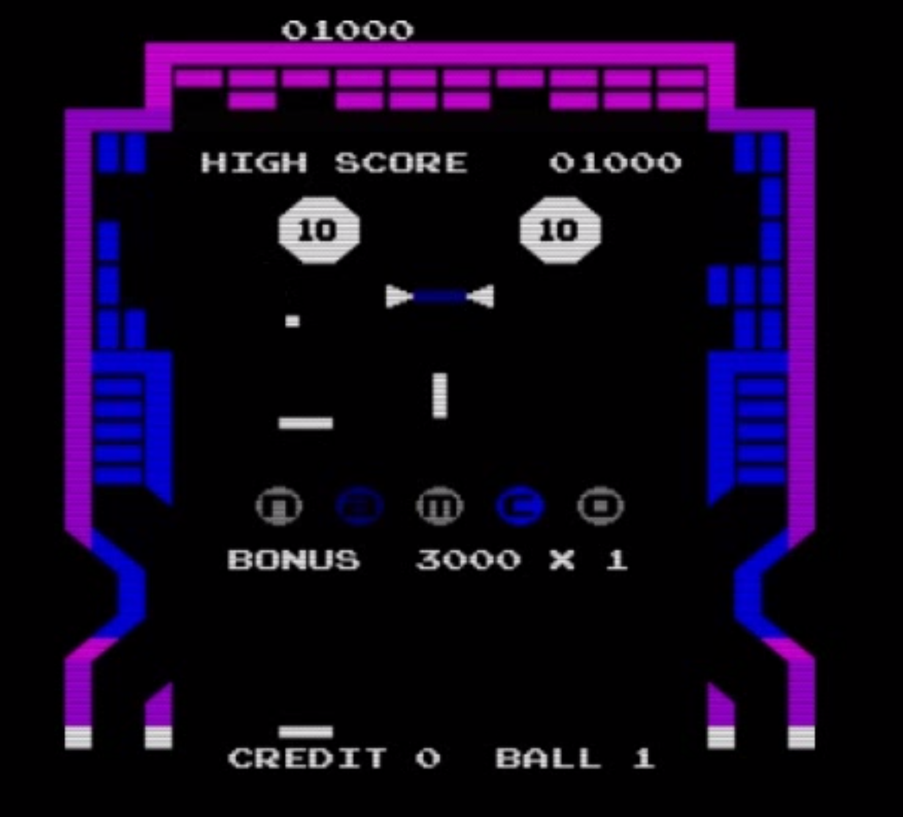
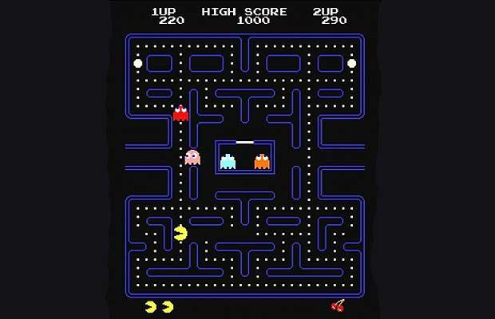
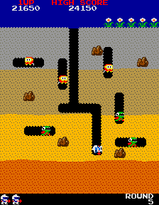
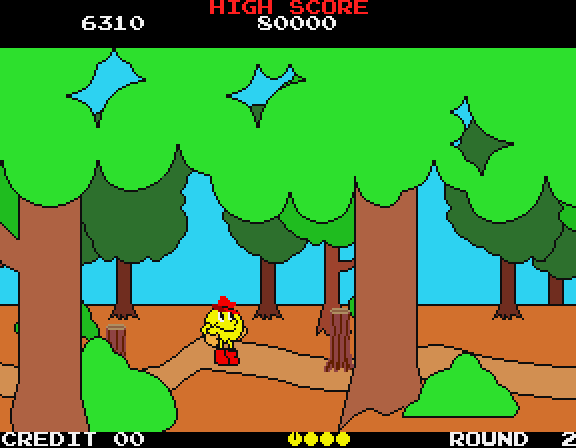
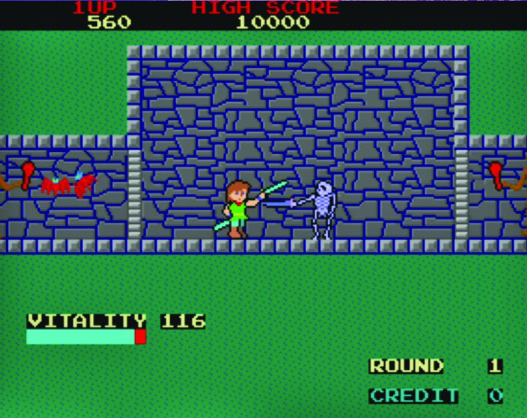
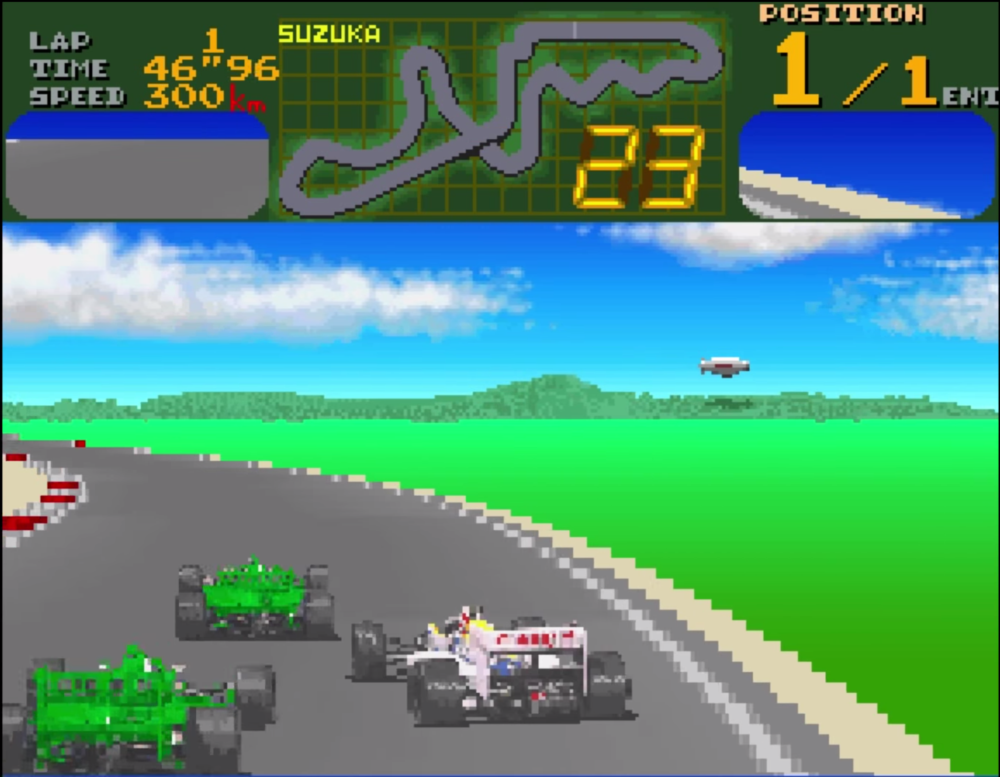

The story of the video game company
Namco was one of the front-runner during the golden age of arcade video games.
It was founded in 1955 by Masaya Nakamura1, formerly named Nakamura Manufacturing and used to sell children’s rides in Tokyo, Japan.
After three years, as this company was expanding, it took its actual name: Namco (Nakamura Amusement machine Manufacturing COmpany).
In 1974 the company managed to buy Atari Japan, that in that period was having a financial problem, after a fight against Sega. Namco accessed the arcade world and opened two subsidiaries: "Namco Enterprises Asia Ltd, Hong Kong" and "Namco America Inc., California".
During 1985, after the video game crash, Atari had been split into two corporate entities: Atari Corporation and Atari Games. The former ook over the home computer and console hardware business. the latter retained the arcade game business. Namco America acquired a controlling interest in Atari Games for $10 million.
The most famous games
Gee Bee was the first game released by Namco. Galaxian was the first real success, though.
After the publication of the well known Pac-Man, Namco did not stop to amaze their customers establishing new records: Pac-Land was one the first scrolling platform that continued Namco's success in establishing iconic franchises during the Golden Age.
Other innovations were: Dragon Buster and Final Lap that were respectively the first game with the energy bar and the first multi-cabinet multi-player game.
Gee Bee
It was released in 1978, is a mixture between Breakout (by Atari) and Flipper.
The goal of the game is to keep the ball from falling off the bottom of the screen for as long as possible. The player bounces a ball into blocks and tries to get the highest score possible .
Galaxian

It was released in 1979, is a fixed shooter game similar to Space Invaders by Taito. It was the first video game that used RGB2 color graphics.
The player controls a spaceship at the bottom of the screen, and shoot enemies descending in various directions.
Pac-Man
 It was released in 1980, is an arcade game. The shape of Pac-Man was inspired by a pizza during a night in 1978. Fourteen months later that night, this game was published, and became one of the most important arcade game of the World.
The purpose of the game is to make Pac-Man eat all the pills without being caught by the four ghosts.
This game was formerly considered "too nice to become popular", things proves that this consideration was absolutely wrong!
Pac-Man is regarded as the most famous game by Namco. Nowadays the little yellow character is still recognised as the mascot of the Japanese company.
Dig-Dug
It was released in 1982, is a very popular arcade game. The protagonist of the game is Dig Dug. He has to eliminate underground monsters either inflating them with air or dropping rocks on them. The enemies are called Pookas that are red and Fygars that are green dragons able to breathe fire.
The whole world is destructible by Dig Dug and he has to avoid to be killed by both Pookas or Fygars.
A new feature that this game introduced was the soundtrack: it, in fact, stops when the player stops moving.
Pac-Land
It was released in 1984, was one of the first scrolling platform. As the name suggests, this game was inspired by the original Pac-Man. In this version he has eyes, arms and legs in order to explore 8 different worlds facing different kinds of enemies and obstacles. He is equipped with magic boots that allow him to do high jumps. Pac-Man has to avoid the ghosts that will try to stop him with different kinds of obstacles.
Dragon Buster
It was released in 1985, it is a platform dungeon crawl action role-playing arcade game that works on vertical scrolling.
The main character, Clovis, has to rescue his beloved princess that is contrained inside a Castle. Clovis has to defeat the enemies using either a sword or with magic spells.
In this game was for the first time introduced the energy bar.
Final Lap
It was released in 1987, it is a racing video game.It is the first racing game to allow up to eight players to simultaneously3 race on the Suzuka Circuit, in a Formula One race.
This was, at the time, considered a revolutionary feature. It was implemented by linking together up to four two-player sitdown-style arcade cabinets.
External Links
- Masaya Nakamura
- RGB Color Graphics
- Multiplayer Technology
- [Visited on 01/11/14] Namco's logo
- [Visited on 01/11/14] Pac-Man
- All the images are Non-free game screenshots used on fair-use